地政学
オデーサは黒海北西岸の港湾都市です。穀物輸出、海上交通、モルドバやドナウ方面への接続が重なり、戦時には防空、港湾警備、外交支援、報道の動きが街の緊張を高めます。南部情勢を読む入口です。要衝でもあります。
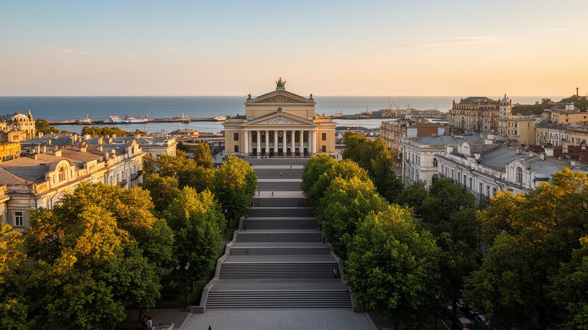
🇺🇦 ウクライナ / ヨーロッパ / World City Atlas
黒海の港、世界遺産の旧市街、穀物輸出、戦時の防空、ユダヤ文化と多民族の記憶が重なるウクライナ南部の都市です。海辺の観光地であり、物流と抵抗の前線でもあります。
都市の骨格
オデーサは港湾、鉄道、穀物回廊、海辺の保養地、世界遺産の街並みが重なる都市です。戦争によって港と歴史地区は攻撃の対象になり、観光と物流の日常は防空と復旧の作業に結び直されています。
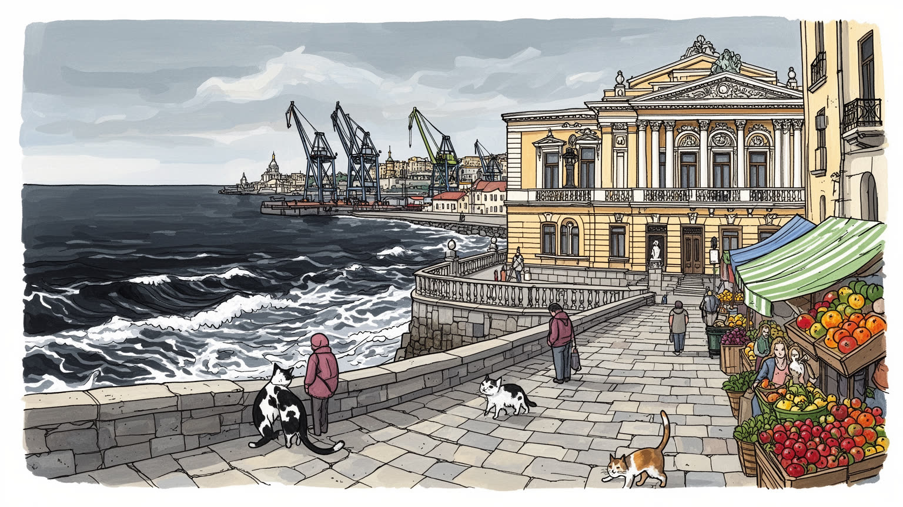
オデーサは黒海北西岸の港湾都市です。穀物輸出、海上交通、モルドバやドナウ方面への接続が重なり、戦時には防空、港湾警備、外交支援、報道の動きが街の緊張を高めます。南部情勢を読む入口です。要衝でもあります。
港湾、倉庫、鉄道、食品加工、船舶修理、観光、IT、大学が都市を支えます。荷役、修理、清掃、警備、医療、露店、避難支援の仕事も多く、戦争で物流の経路と働く時間が変わります。生活費の不安も続く労働の現場です。
ウクライナ、ユダヤ、ギリシャ、イタリア、ロシア語文化の記憶が旧市街に残ります。正教会、シナゴーグ、劇場、音楽、祭り、市場、文学、海辺のユーモアが重なり、戦時の文化保護も重要です。祈りも続いています。
歌劇場、ポチョムキン階段、港、ビーチ、地下道は都市の顔です。住民は空襲警報、停電、住宅被害、物価、学校、子どもの遊び場、高齢者の移動と向き合います。観光再開は安全と文化財保護が前提です。生活も守ります。
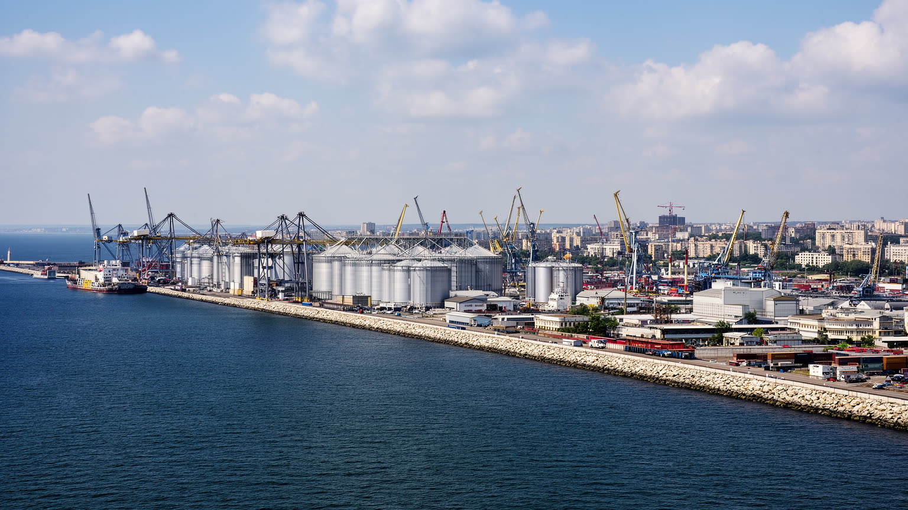
オデーサの第一の骨格は黒海港です。港は海辺の風景である前に、ウクライナの穀物、油脂、金属、機械、輸入品を外へ出し入れする国家的な装置です。鉄道で内陸の農業地帯と結ばれ、倉庫、サイロ、税関、修理工場、トラック輸送、港湾労働が岸壁の周囲に集まります。戦争後は港が攻撃対象となり、海上回廊、保険、機雷、ドローン、防空、検査の問題が日々の経済に入り込みました。港で働く人にとって、物流は抽象的な貿易額ではなく、警報下のシフト、損傷した施設の復旧、船員の安全、家族の避難判断として現れます。オデーサを見るには、旧市街の美しさだけでなく、穀物を動かす線路、岸壁の修理、海を監視する緊張を同じ都市の現実として読む必要があります。港の稼働は農家の収入、外貨、食品価格、国際支援にもつながります。船が出るたびに、港湾職員、鉄道員、倉庫作業員、検査官、修理工、警備員が危険を分け合います。都市の経済は岸壁だけでなく、背後の住宅地や市場の暮らしまで動かします。だから港湾政策は地域の雇用政策でもあり、戦時の復旧政策でもあります。海が開くか閉じるかで、都市の気分も家計も変わります。港はオデーサの外向きの顔であり、住民の毎日の仕事場でもあります。岸壁の復旧速度は、国家の輸出力と家庭の生活感覚を同時に左右します。海の安全は生活の条件です。
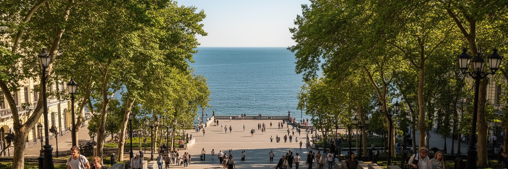
オデーサの旧市街は、碁盤目に近い街路、並木道、中庭、劇場、宮殿風の建物、港へ下る階段で知られます。十九世紀の港湾都市として、地中海、黒海、東欧の建築語彙が混じり、商人、船員、劇場人、学生、職人の生活を受け止めてきました。世界遺産登録は観光の勲章であるだけでなく、攻撃で傷つく都市を国際的に守るための警告でもあります。文化財保護は壁の修復だけでは終わりません。住民が暮らす建物、店舗、学校、宗教施設を使い続けながら、破片、湿気、停電、保険、修理費の問題に向き合う必要があります。美しい街並みは、日常の住宅と商いが残ってこそ生きます。遺産を守ることは、観光写真では見えない中庭の生活を守ることでもあります。戦時の修復では、応急処置と長期保存の判断が難しくなります。窓を板で塞ぐ、彫刻を覆う、瓦礫を記録する、住民の安全を確保する作業が同時に進みます。古い建物は所有関係も複雑で、誰が費用を負担するかが復旧の速度を左右します。旧市街は博物館ではなく、暮らしながら守る遺産です。ポチョムキン階段は象徴ですが、その周囲の路地や住戸まで含めて都市の記憶です。保存は観光導線を整えるだけでなく、住む人が退去せずに直せる仕組みを必要とします。修復の優先順位は、歴史的価値と生活の緊急性を同時に考えて決められます。階段も暮らしも遺産です。
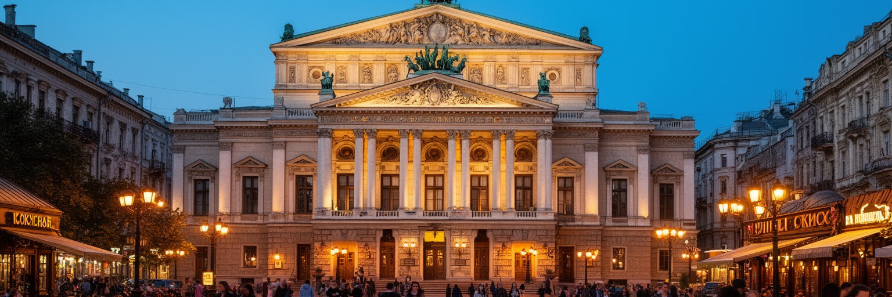
オデーサはウクライナの都市でありながら、港町として多民族の記憶を濃く残してきました。ユダヤ人、ギリシャ人、イタリア人、ブルガリア人、モルドバ人、ロシア語話者、ウクライナ語話者が交易、劇場、学校、印刷、食、宗教施設を通じて街を作りました。ユダヤ文化は文学、音楽、商業、移民史に深い痕跡を残し、同時に迫害、戦争、ホロコースト、移住の痛みも抱えます。戦争は言語と記憶の扱いをさらに政治的にしました。ロシア語が聞こえる街であっても、それはロシア国家への帰属を意味しません。オデーサの複雑さは、複数の言語と記憶が同じ路地に重なる点にあります。正教会の暦、シナゴーグの礼拝、記念日、海辺の祭り、劇場の楽団、夜の小さな演奏は、宗教と娯楽を切り離さずに街の時間を作ります。祭礼の日には、鐘の音や歌声も路地に残ります。多文化性を観光の飾りにせず、誰の記憶が消され、誰が今も街を支えるのかを読む必要があります。街の冗談、魚料理、姓名、墓地、古い看板、文学の舞台は、単純な国民史に収まりません。だからこそ記念碑や通り名の変更は、暴力や支配の記憶をどう語り直すかという公共の議論になります。歌劇場や文学の記憶も、この混ざり合いから生まれました。文化を守るとは、有名な建物だけでなく、複数の出自が街を作った事実を語り続けることです。
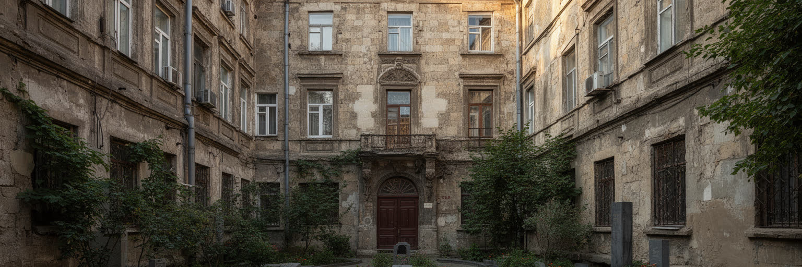
オデーサの日常は、黒海の光と空襲警報が同じ時間に存在する都市になりました。ミサイルやドローンの攻撃は港湾施設、発電設備、住宅、文化財を傷つけ、防空の成否が物流、学校、病院、観光、夜の外出を左右します。住民は地下空間や避難所、停電時の水と通信、窓の養生、家族との連絡を生活の一部として覚えました。戦争は都市の誇りを強める一方、疲労、喪失、避難、徴兵、物価上昇を積み重ねます。安全保障は軍事だけではなく、医療、心理支援、住宅修理、学校の再開、港で働く人の保護にも広がります。オデーサを読む時、英雄的な抵抗だけでなく、長い警報の後に店を開け、瓦礫を片付け、子どもを通学させる人の持続力を見る必要があります。防空の音は都市の時間感覚を変え、夜の営業、劇場公演、学校行事、港の作業予定を何度も組み替えます。安全な場所を知っているか、発電機を持てるか、家族を避難させられるかで負担は変わります。戦時の平常は誰にでも同じではなく、弱い人ほど準備の余裕が少なくなります。ユダヤ人住民の記憶も、避難、迫害、移住、帰還の歴史を通じて現在の危機と響き合います。過去の暴力を記録する場所は、今の喪失を受け止める場所にもなります。記憶の継承は、破壊への抵抗そのものでもあります。防衛は港だけでなく、家族史と墓地と学校を守ることにも広がります。
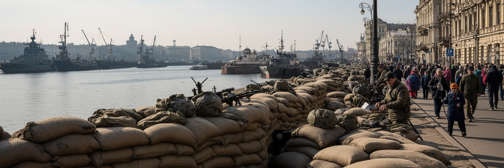
オデーサの産業は港湾だけで閉じません。食品加工、機械修理、船舶関連、大学、医療、観光、IT、商業が都市の雇用を作り、周辺農村やドナウ方面の物流とも結びつきます。港が止まると、倉庫、鉄道、通関、保険、飲食、ホテル、タクシー、露店販売まで影響を受けます。戦時には男性の動員、避難民の流入、国外へ出た家族、遠隔勤務、停電への対応が職場の条件を変えました。高い技能を持つ修理工、荷役作業員、船員、料理人、看護師、教師、技術者の仕事は都市の見えにくい基盤です。観光客が戻るかどうかは、広告だけでなく、働く人が安全に通勤でき、収入を得て、子どもを預けられるかにかかっています。海洋大学や専門学校は港湾、工学、医療、観光の人材を送り出し、学生の街としての若さも保っています。大学周辺のカフェ、書店、寮、研究室は、若い世代が街に残る理由にもなります。ITや教育機関は遠隔で外部市場とつながれますが、停電や通信不安は仕事の継続を難しくします。ホテルや飲食店は観光の回復を待ちながら、避難者、支援関係者、軍関係の移動も受け止めます。港を守ることは倉庫と岸壁を守るだけでなく、労働者の技能と家族の生活を守ることです。経済の数字は、修理を続ける手と夜勤の時間に支えられています。仕事の継続は都市への信頼を保つ基礎になります。
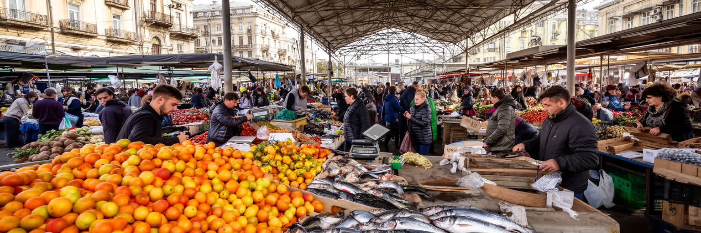
オデーサの市場は、港町の食と会話を支える重要な生活装置です。プリヴォズ市場のような場所では、魚、野菜、果物、乳製品、香辛料、家庭料理、修理品、雑貨が並び、売り手と買い手の交渉が都市のリズムを作ります。燻製魚の匂い、熟した果物の甘さ、金属の秤の音、値切りの声は、港町の感覚を強く残します。市場は観光客にとっては活気ある名所ですが、住民にとっては物価、収入、季節、物流の乱れを毎日確認する場所です。戦時には燃料、停電、通行規制、避難者の増加、仕入れ先の変化が価格と品ぞろえに表れます。小さな商いは家族経営も多く、女性、高齢者、移住してきた人、露店で稼ぐ若者の労働を支えます。買い物袋を引く年配者、子ども連れの親、支援物資を探す人が同じ通路を歩きます。周辺の小売店や買い物通りは、服、携帯品、学用品、修理サービスを補います。市場で聞こえる冗談や値切りは、単なる風情ではありません。不安の中で人が顔を合わせ、食べ物を確保し、街がまだ動いていることを確かめる社会的な仕組みです。港湾物流と家庭の食卓が同じ都市でつながることも見えます。観光用の店だけでなく、住民が毎日使う売り場が残るかどうかは都市の健康を測ります。価格が上がれば食卓は変わり、仕入れが途切れれば小さな店が閉まります。市場が開く朝は、都市がふたたび動き出したという合図です。
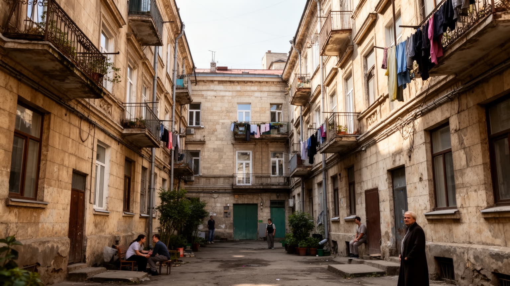
オデーサ観光の魅力は、港を見下ろす階段、歌劇場、並木道、中庭、地下道、黒海のビーチが近い距離にあることです。夏の海辺、カフェ、劇場、ユーモアの文化は、都市を明るい保養地として印象づけてきました。サッカー観戦、海水浴、ジョギング、桟橋の散歩、夜のバーや小劇場の音楽も、住民の余暇を形づくります。黒海の魚、ワイン、香草の効いた家庭料理は、観光と日常の食卓を近づけます。しかし戦争後の観光は、単純な娯楽ではありません。警報、夜間規制、海岸の安全、文化財の損傷、保険、交通、外国人旅行者の判断がすべて影響します。観光が戻ることは住民の収入と街の気分を支えますが、危険を過小評価すれば暮らしを圧迫します。重要なのは、文化施設、ホテル、飲食店、ガイド、清掃、交通が安全に動ける条件を整えることです。地下道や中庭の散策は、都市の記憶を近く感じさせますが、住民の生活空間でもあります。観光客の視線が戻るほど、修復中の建物、喪失を抱える家族、働く人の疲労への配慮が必要になります。土産物店や商店街が開くことも、都市の気分を明るくします。中庭は写真の背景である前に、洗濯、修理、会話、子どもの遊びが残る生活の場所です。海辺の楽しさと戦時の緊張が同居する点に、現在の観光再生の難しさがあります。街を見せる速度より、暮らしを守る配慮が都市の魅力を長く保ちます。
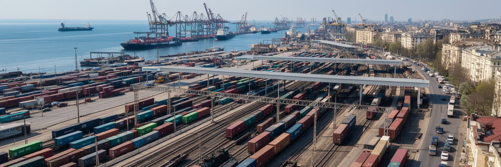
オデーサの暮らしは、旧市街の中庭、郊外住宅、海辺の集合住宅、市場、トラム、学校、病院、地下空間で成り立ちます。戦争はこの日常を細かく変えました。停電に備える発電機、断水時の水、警報時の移動、窓を守る工夫、避難して来た家族との同居、国外に出た親族との連絡が生活の一部になっています。住宅被害は建物の損傷だけでなく、家賃、修理費、暖房、保険、共有部分の管理にも及びます。高齢者、障害のある人、子ども、単身者、避難民は、同じ警報でも負担が大きく違います。子どもはオンライン授業と避難訓練を行き来し、年配の住民は薬、階段、暖房、年金手続きに不安を抱えます。市場やカフェが開くことは、単に商売が続くという意味ではなく、人が互いの無事を確かめる場が残ることです。地元メディアやメッセージアプリは、警報、停電予定、交通、支援窓口、文化イベントを伝える生活インフラになりました。学校が対面授業を続けられるか、病院が電力を確保できるか、公共交通が警報後に戻るかは、生活の安心を左右します。古い中庭の共同性は助け合いを生む一方、老朽化した建物では修理の遅れや寒さが問題になります。家は眠る場所であると同時に、移動できるか、助けを呼べるかを決める基盤です。住まいの復旧は、都市に戻る意思を支える最初の大事な生活の条件です。
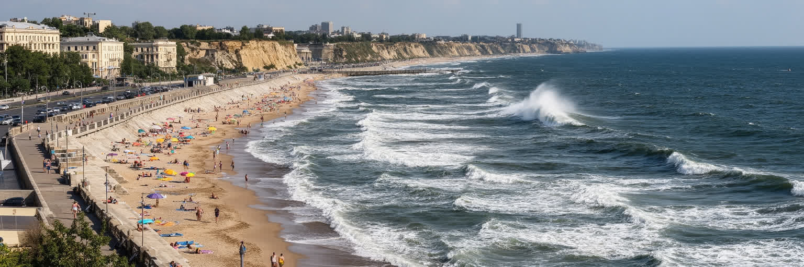
オデーサは港だけでなく、鉄道、道路、空港、ドナウ方面の接続によって南部ウクライナを束ねます。内陸の穀倉地帯から来る貨物は線路とトラックで港へ向かい、旅客はキーウ、リヴィウ、モルドバ方面、沿岸の町と結ばれます。戦争で海上輸送が不安定になると、ドナウ港や陸路の重要性が増し、検問、燃料、橋、倉庫、国境手続きが経済を左右しました。交通は便利さだけでなく、避難、軍需、医療搬送、復旧資材の移動にも関わります。空港が通常運航できない状況では、鉄道駅とバスターミナルの役割はさらに大きくなります。地域接続は住民の生活にも直結します。親族を訪ねる列車、避難先から戻るバス、負傷者を運ぶ車両、修理部品を積むトラックが同じ道路を使います。燃料価格や通行規制は市場の品ぞろえと通勤時間を変えます。交通網の回復は、経済だけでなく家族関係と医療の回復でもあります。海辺の気候は観光資源ですが、猛暑、嵐、沿岸侵食、海岸の安全管理も重要です。週末の買い物、海辺の散歩、ショッピングセンターへの移動、学校や競技場への通学も、交通の安定に支えられます。トラムの揺れや潮の匂いは、移動の記憶にも残ります。ビーチを楽しめる都市であり続けるには、軍事的な安全と環境管理を同時に考える必要があります。線路と海岸は、都市の開放性と脆さを同時に示します。
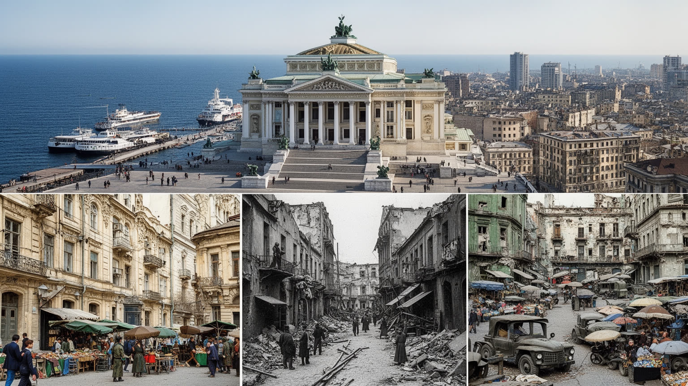
オデーサを読むことは、黒海の美しい港町を眺めることだけではありません。穀物輸出を支える岸壁、世界遺産の旧市街、多民族の記憶、ユダヤ文化、正教会の儀礼、海辺の観光、戦時の防空、避難生活、復旧の労働を一つの都市として見ることです。都市の魅力は、明るい海風と冗談、劇場と市場、階段と並木道にあります。そこに魚料理の匂い、夜の音楽、サッカーの歓声、ニュースを確認するスマートフォン、買い物袋を持つ高齢者、海辺で遊ぶ子どもも加わります。その背後には攻撃に耐える港、傷ついた住宅、警報に慣れてしまった住民の疲労があります。オデーサの重要性は、経済規模だけでは測れません。黒海の安全保障、ウクライナの食料輸出、文化財保護、移民と記憶、観光の再生がここで交差するからです。華やかさと危機を切り離さず読む時、オデーサは戦争下の都市がどのように働き、祈り、学び、商い、暮らしを続けるかを示す地図になります。港が動くこと、劇場が開くこと、市場で会話が戻ること、学校が授業を続けることは、それぞれ別の復旧ではなく同じ都市の回復です。世界の都市として見るなら、ここには食料安全保障、海上交通、文化遺産保護、避難民支援、観光再生が同時にあります。港町の明るさを保つためには、防空、住宅、教育、医療、市場のような地味な基盤を守らなければなりません。